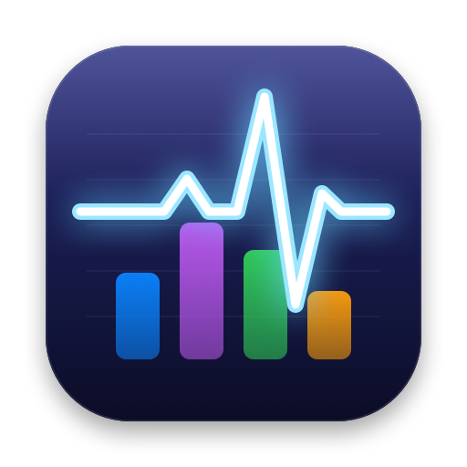

PulsePolítica de privacidade
Última atualização: 23 de setembro de 2026.
Resumo: o Pulse não coleta nenhum dado seu. Tudo o que ele mostra é lido e exibido no seu próprio Mac, e nada é enviado para fora dele.
O que o Pulse lê
Para mostrar os gráficos, o Pulse lê do macOS, só no seu Mac, informações de uso do sistema: uso de CPU por núcleo, uso de memória e de swap, uso da GPU, espaço livre e atividade dos discos, e o volume de dados de rede. Esses números ficam na memória do app enquanto ele está aberto e servem só para desenhar os gráficos.
O que o Pulse não faz
- Não cria conta, não pede login e não pede dados pessoais.
- Não acessa a internet: não envia dados, não tem análise de uso, rastreamento ou anúncios.
- Não lê seus arquivos, documentos, mensagens ou histórico de navegação.
- Não compartilha nada com terceiros.
O que fica salvo no seu Mac
Seus ajustes (estilos, cores, posição da janela flutuante e alertas) ficam guardados localmente, nas preferências do app no seu Mac. Os alertas são notificações locais do macOS. Se você usar "Exportar ajustes", o arquivo é salvo onde você escolher, e só lá.
Crianças
O Pulse não coleta dados de ninguém, incluindo crianças.
Mudanças e contato
Se esta política mudar, a nova versão aparece nesta página, com a data atualizada. Dúvidas: veja a página de suporte.
Privacy policy (English)
Pulse does not collect any data. It reads system usage statistics (CPU per core, memory and swap, GPU, disk space and activity, network byte counters) on your Mac only to draw its graphs. It has no account, no login, no network access, no analytics, no tracking and no ads, and it does not read your files. Settings are stored locally on your Mac. Alerts are local macOS notifications. Nothing is shared with third parties.